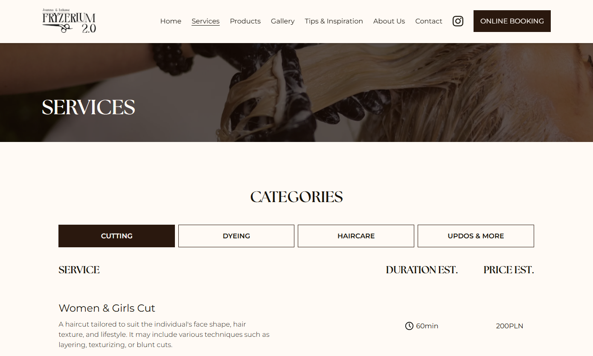

I'm a Multimedia Design Student at Business Academy Aarhus,
and a Front-End enthusiast.
It all started from trolling my friends back at primary school with
the "Inspect" tool at different websites.
As a kid I used
to go onto any games website and inspect one of the newest patch notes
/ posts, and update it with information about the ban of my friends
accounts.
For some weird reason, they would believe it (of course until checking
themselves, but the look on their faces was more than satisfying)
Now look where that got me!
I am a goal-oriented person, and I love having something to follow. With a proper list of things to do, I thrive, as then I am focused on the task at hand, knowing fully what to do. The "how to do" gets resolved with time and effort.
Having been interested in a plethora of various software for different purposes, I know my way around some of the more popular programs to use, whether it's music production, coding or video editing, I am happy to adapt and provide.
Teamwork abilities don't come with ease, yet I can certainly say that it's worth being a part of one. Each individual is unique, together we solve our own problems, communicate, and efficiently produce ways in order to solve the issue at hand.
As of the day of writing this, my best project at hand is definitely a digital solution for FRYZERIUM 2.0. We managed to diligently create a solution from the ground up, covering a full-on UX/UI process, which resulted in a fully coded, optimized and responsive website.
